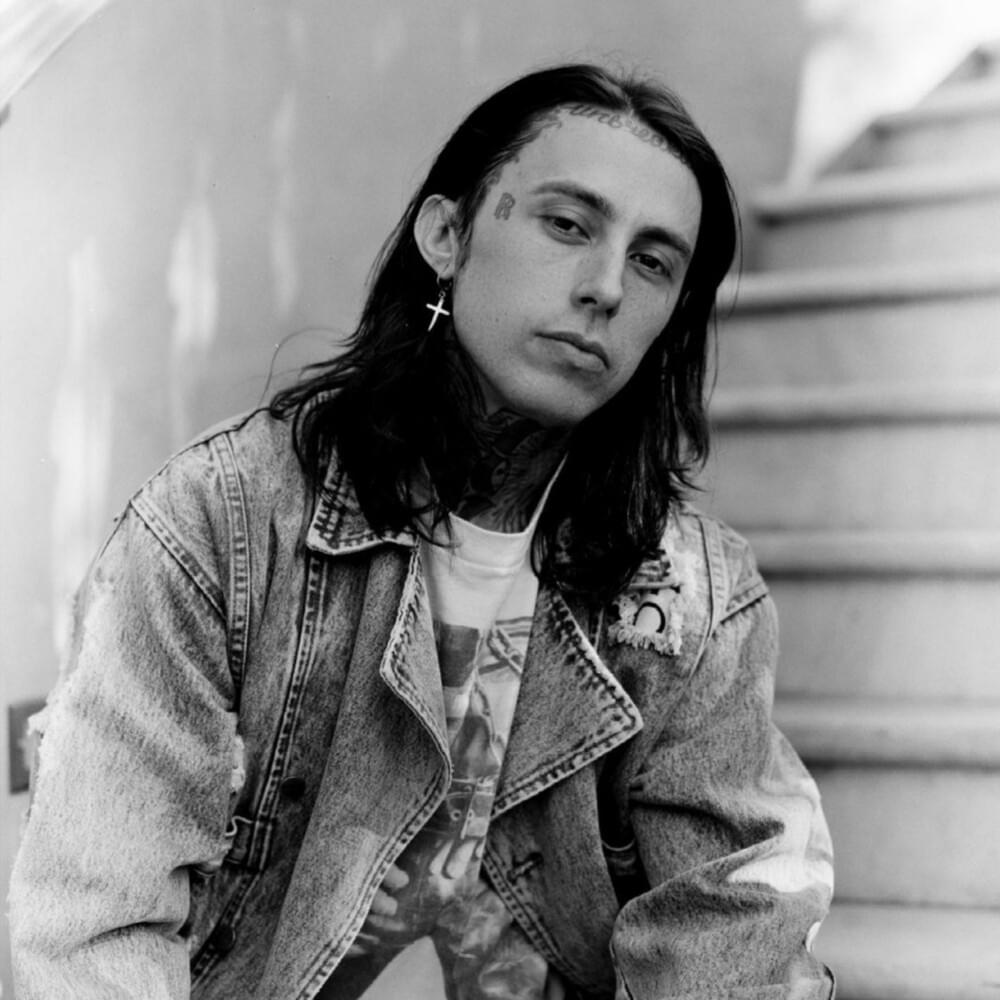
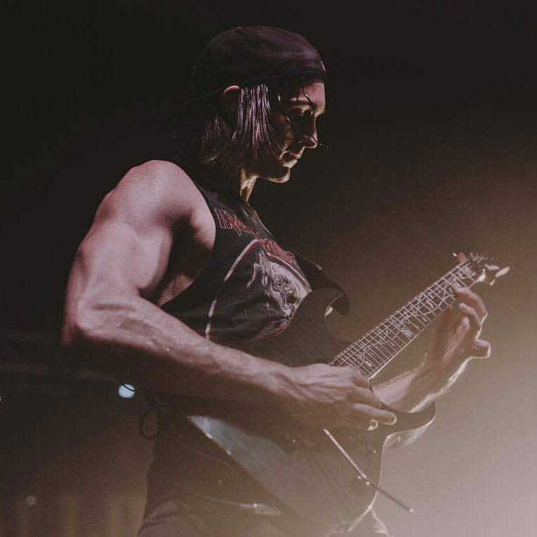

|  | il exerce sa profession de chanteur dans ce groupe depuis 2008. |
 |
depuis les années 2018 il joue dans ce groupe en tant que guitariste. |
 |
il s'occupe de la basse, mais également des chœurs grâce à sa puissance vocale, il possède sa propre chaîne YouTube ou ces performances vocales sont mise en avant, sont nom de scène est Wes Horton III. |
|  | les chœurs dans certaines musiques tels que la chanson "Zombified". |
qui aide différent groupe de rock tel que Sleeping With Sirens et Falling In Reverse Il aidera notamment ce groupe pour plusieurs musiques dont la plus récente:"Zombified". |